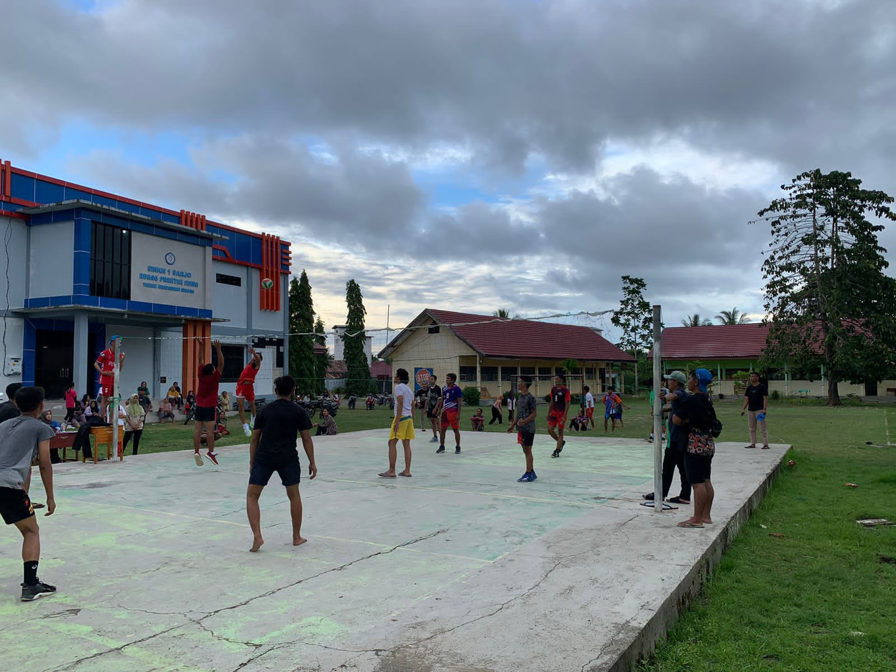

Sejarah Desa Letawa
Asal usul Desa Letawa
Letawa berasal dari bahasa daerah Kaili Inde, suku yang bermukim di wilayah kabupaten Donggala Provinsi Sulawesi Tengah
yang berarti "Tidur di atas daun", sumber cerita dipetik dari hasil catatan tangan Bapak Amir Sidik yang sampaikan kepada
Bapak Hamri selaku Kepala Desa Letawa saat itu. Pada 1980 PT. Sulwood Konsorsium PT. letawa yang bergerak di bidang pengolahan
kayu hasil hutan bekerja sampai tahun 1985 dan mulai berlahan-lahan pindah ke desa Tikke sampai saatu ini. Pada tahun 1991 dilakukan
pembangunan jalan Trans Sulawesi yang menghubungkan antara provinsi Sulawesi Selatan dengan Provinsi Sulawesi Tengah dan kemudian
berangsur-angsur penduduk yang mendiami wilayah Letawa yang masih berstatus Rukun Tetangga (RT).

Terbentuknya desa Letawa
Seiring berkembangnya waktu, Pasangkayu dimekarkan menjadi kabupaten Mamuju Utara dari kabupaten induk Mamuju yakni pada tahun 2003.
Nama RT Letawa dimekarkan menjadi Dusun Letawa dari dusun induk Maponu pada tahun 2004. Kecamatan Sarjo pada saat itu masih berstatus
Desa Sarjo di wacanakan akan dimekarkan menjadi Kecamatan Sarjo. Pada tanggal 13 agustus 2007 (Perda Nomor 3 Tahun 2007) Desa ini didefinitifkan
oleh Pemerintah Daerah yang diwakili oleh Bupati H. Abdullah Rasyid bersama Wakil Bupati H. Agus Ambo Jiwa (bupati sekarang) dan diberi nama Desa Letawa.
Adapun nama-nama Kepala Desa Letawa diantaranya :
| No |
Nama |
Jabatan |
Periode |
Keterangan |
| 1 |
Hamri, SE |
Kepala desa |
2007 - 2009 |
Karateker |
| 2 |
Sujasmin, SE |
Kepala desa |
2009 - 2009 |
Karateker |
| 3 |
Hamri, SE |
Kepala desa |
2009 - 2015 |
Defenitif |
| 4 |
Hamri, SE |
Kepala desa |
2015 - 2016 |
Karateker |
| 5 |
Najamuddin |
Kepala desa |
2016 - 2022 |
Defenitif |
| 6 |
Muhammad Yusuf Umar |
Kepala desa |
2022 - 2028 |
Defenitif |
Kondisi Pemerintahan Desa Letawa
Pembagian wilayah desa Letawa
| Pemukiman |
250 Ha |
| Pertanian |
113 Ha |
| Perkebunan |
663 Ha |
| Pekuburan |
1 Ha |
| Pekarangan |
200 Ha |
| Taman |
- Ha |
| Perkantoran |
1 Ha |
| Sarana umum lain |
181 Ha |
| Jumlah |
1.419 Ha |
Desa Letawa terdiri dari 4 (empat) dusun dan 13 (tiga belas) RT :
- Dusun Tinonto (RT 01 s/d RT 04)
- Dusun Takumpisi (RT 01 s/d RT 04)
- Dusun Pambua (RT 01 s/d RT 02)
- Dusun Harapan (RT 01 s/d RT 03)
Kondisi geografis desa
Letak Geografis
Secara geografis desa Letawa terletak di bagian utara Kabupaten Mamuju Utara berada pada posisi 0,54°S lintang Selatan diantaranya
119,33°E Bujur Timur yang terdiri dari 4 (empat) dusun dan 13 (tiga belas) RT
yang merupakan salah satu desa di wilayah Kecamatan Sarjo dengan batas sebagai berikut :
| Batas |
Desa Letawa / Kelurahan |
Kecamatan |
| Sebelah Utara |
Desa Sarjo |
Sarjo |
| Sebelah Selatan |
Desa Maponu |
Sarjo |
| Sebelah Timur |
Desa Tanampulu |
Banawa Selatan (Sulteng) |
| Sebelah Utara |
Selat Makassar |
- |
Secara visualisasi wilayah administratif dapat dilihat dalam peta wilayah desa Letawa.
Peta desa Letawa dengan luas wilayah adalah 14,19 km2 sebagai berikut :
Topografi
Desa Letawa merupakan desa yang berada di pantai utara Sulawesi Barat, dengan ketinggian 0 - 5 mdpl (meter diatas permukaan laut), sebagian besar wilayah
berupa perkebunan dan persawahan dengan kemiringan antara 0° - 35°, dimana berbatasan langsung dengan desa Sarjo Kecamatan Sarjo diantaranya sebelah
timur berbatasan dengan desa Tanampulu kecamatan Banawa Selatan kabupaten Donggala provinsi Sulawesi Tengah, sebelah selatan berbatasan dengan desa Maponu kecamatan
Sarjo, sebelah barat berbatasan dengan Selat Makassar (laut).
Hidrologi dan Klimatologi
Aspek hidrologi suatu wilayah desa Letawa sangat diperlukan dalam pengendalian dan pengaturan tata air. Berdasarkan hidrologinya, aliran-aliran air sungai di wilayah desa Letawa
merupakan aliran sungai debit yang besar dan aliran sungai debit yang sedang dan kecil seperti :
-
Sungai Surumana yang akan mampu mengairi persawahan di 2 dusun, bila dibangun pengairan bahkan mampu mengairi 4 desa
jika dibangun dengan semaksimal mungkin.
-
Sungai Tinonto, sekarang airnya dialiri dengan perpipaan dengan debit kecil. Disamping itu ada pula beberapa mata air
yang bisa digunakan sebagai sumber mata air bersih maupun sumber air untuk pertanian, tapi ada pula petani yang bertani
hanya mengandalkan tadah hujan atau bertani bila musim hujan tiba. Sampai saat ini petani/persawahan hanya mengandalkan irigasi kecil dan adapula hanya mengandalkan air hujan.
Pemuda dan Olahraga
Dalam hal kepemudaan, pada tahun 2015 tidak terlepas dari aktifitas dan eksistensi kelompok pemuda meskipun karang taruna sudah
dibentuk tapi saat ini belum mempertlihatkan eksistentisnya, pemuda pun mampu memperlihatkan prestasinya baik level desa Letawa maupun
level kecamatan. Organisasi keolahragaan yang ada di desa Letawa cukup variatif, semua organisasi tersebut masih dikelola secara amatir
dan hanya penyaluran kegemaran saja. Untuk lebih jelasnya data organisasi keolahragaan dapat dilihat dalam tabel di bawah ini :
| No |
Klub olahraga yang terdaftar |
Jumlah |
| 1 |
Klub Sepak Bola |
4 |
| 2 |
Klub Bola Volly |
8 |
| 3 |
Klub Bulu Tangkis |
3 |
| 4 |
Klub Tenis Meja |
3 |
| 5 |
Klub Senam Sehat |
- |
| 6 |
Klub Jantung Sehat |
- |
| 7 |
Klub Pencak Silat |
- |
| 8 |
Klub Futsal |
2 |
Dari klub olahraga di atas, telah banyak melahirkan atlet-atlet berbakat dan ikut serta dalam kegiatan mewakili
desa Letawa untuk kontingen tingkat kecamatan, bahkan untuk tingkat kabupaten Mamuju Utara. Sedangkan dalam ajang
kegiatan kompetisi sepak bola, volly dan futsal seringkali diadakan di desa Letawa.

Tempat Peribadatan
Tabel tempat peribadatan di desa Letawa :
| No |
Jenis |
Jumlah |
| 1 |
Masjid |
4 |
| 2 |
Mushola |
1 |
| 3 |
Langgar |
- |
| 4 |
Madrasah |
- |
Data nama masjid di desa Letawa :
| No |
Nama Masjid / Musholah |
Alamat |
Keterangan |
| 1 |
Al-Abrar |
Tinonto |
Masjid |
| 2 |
Nurul Ilmi |
Takumpisi |
Masjid |
| 3 |
Babussa'ada |
Pambua |
Masjid |
| 4 |
Babussalam |
Harapan |
Masjid |
| 5 |
Jabal Nur |
Tinonto |
Musholah |